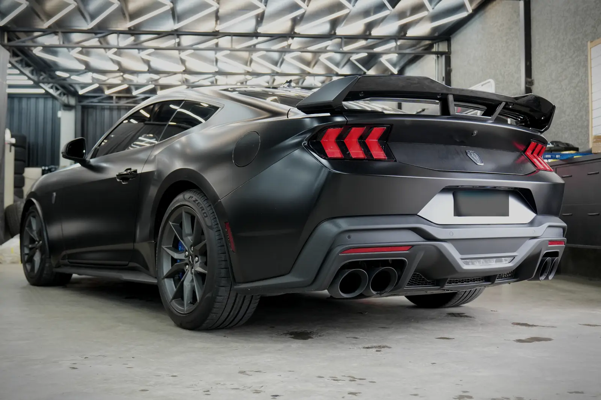
Funilaria, pintura, proteção e personalização.
Do jeito certo, na primeira vez. Para carros e picapes em Ponta Grossa.
Ninguém gosta de voltar à oficina para refazer um serviço.
Por isso a gente avalia cada carro com calma, usa o material certo para cada caso e só entrega quando o acabamento está pronto.
- 5 anos
- de Vallech
- +30 anos
- de experiência
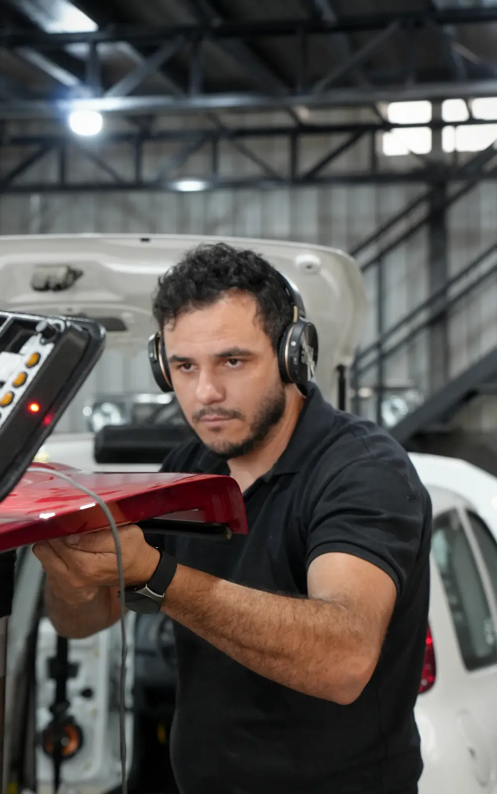
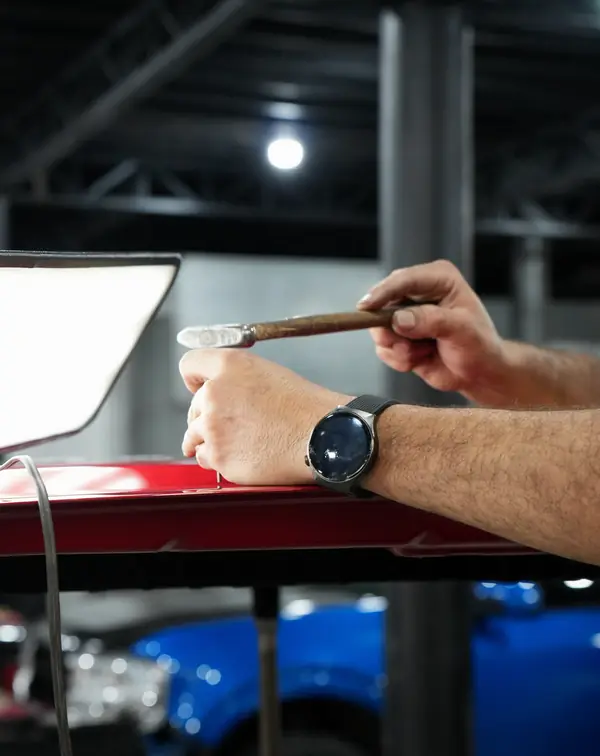
O que a Vallech faz
Funilaria e pintura
Amassado, batida, risco fundo ou pintura desgastada, em qualquer tipo de carro. A gente desmonta o que for preciso, corrige a lataria e pinta com tintas PPG para a cor bater com o resto do carro.
Rodas e pneus para picapes
Roda e pneu mudam muito a postura de uma picape. A gente monta do aro 13 ao 22. O foco é nas caminhonetes brutas: roda maior, pneu de uso misto, postura mais alta.
Falar no WhatsApp sobre rodas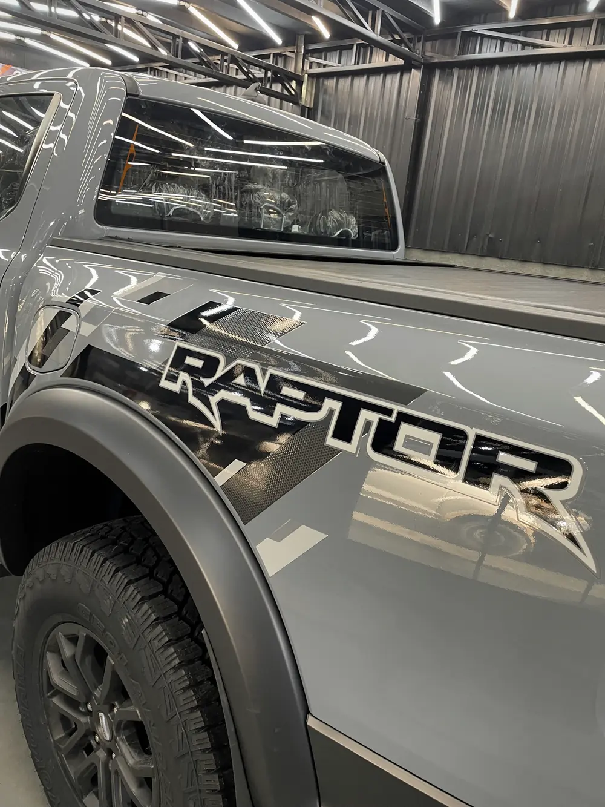
Proteção e acabamento
Depois que a pintura está certa, o trabalho é manter ela assim.
-
PPF
Película aplicada sobre a pintura para segurar pedrisco, riscos e o desgaste do dia a dia. Existe em versão brilhante e fosca.
-
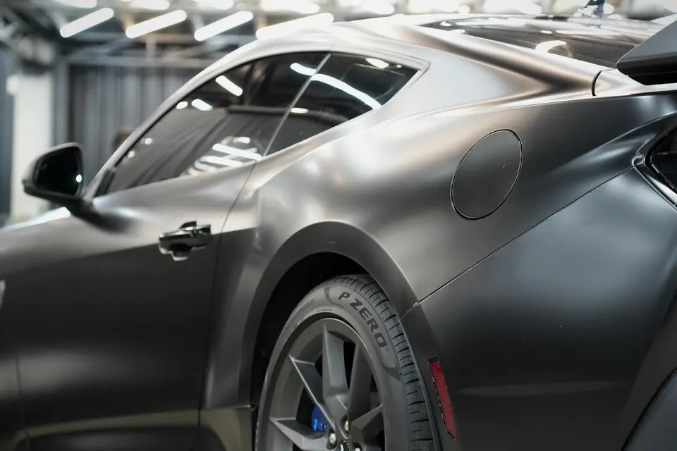
Insulfilm
Película nos vidros para diminuir o calor e a claridade dentro do carro.
-
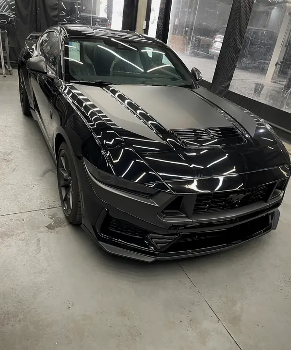
Polimento
Tira as marcas finas da pintura e devolve o brilho.
-
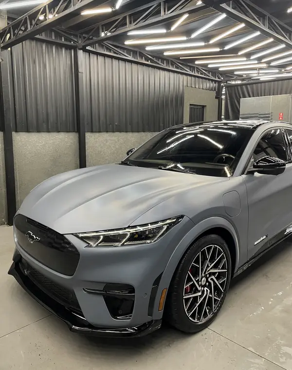
Vitrificação
Uma camada de proteção sobre a pintura, feita com produtos SONAX.
Personalização
Lanternas, pinças de freio e projetos de transformação. Você chega com a ideia e a gente ajuda a decidir o que combina com o carro.
-
Lanterna do Mustang Dark Horse.
-
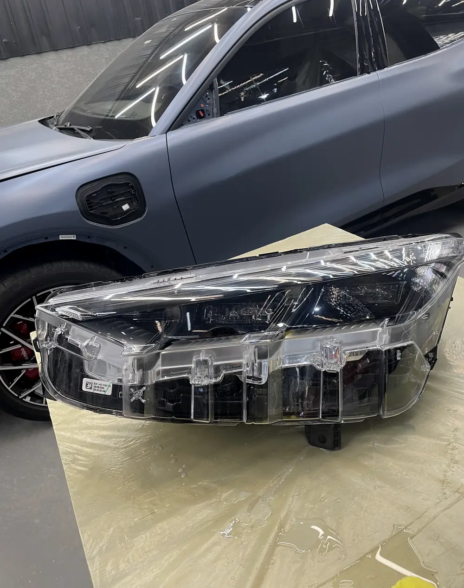
Farol desmontado para o serviço.
-
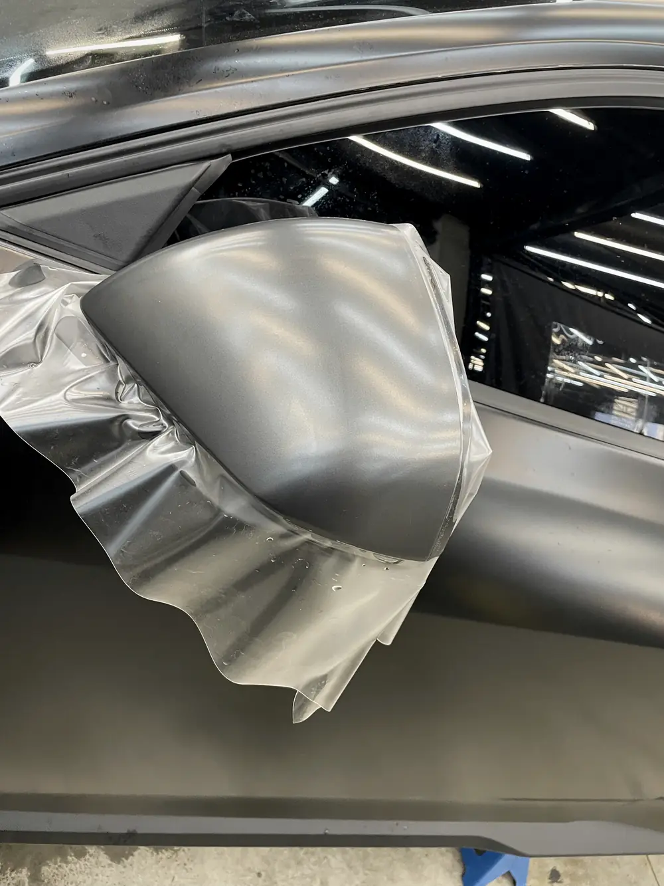
Aplicação de película no retrovisor.
-
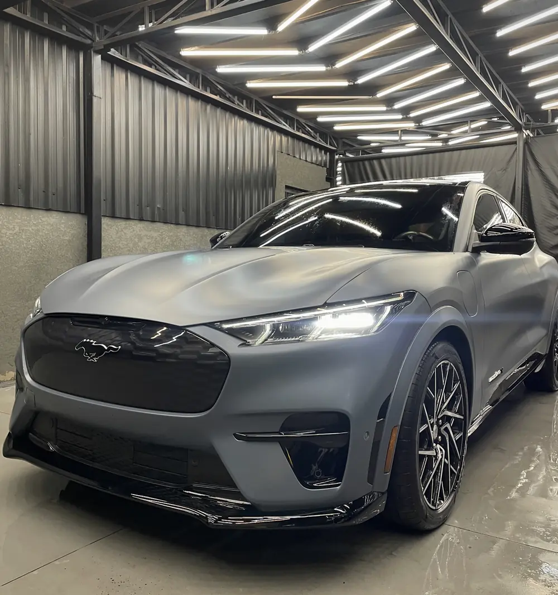
Mustang Mach-E, de cinza brilhante para fosco.
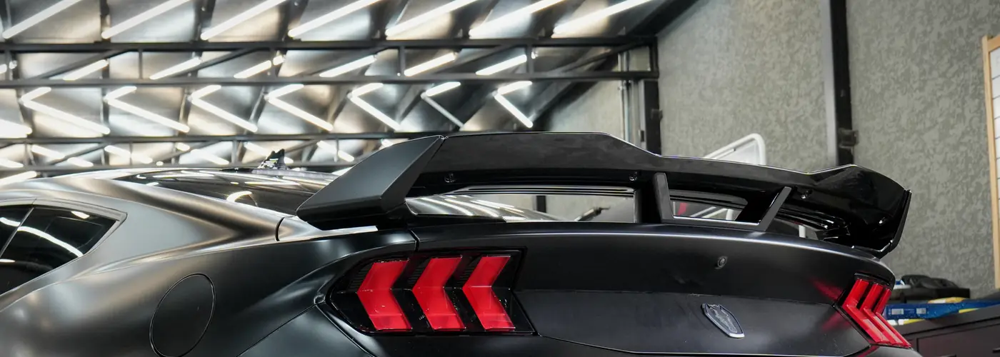
Conte o que você quer fazer no seu carro.
Mande fotos e uma descrição pelo WhatsApp, ou passe na oficina.
Jardim Carvalho, Ponta Grossa, PR
84015-490 (42) 99831-6006